Entrambi i personaggi ricoprono il ruolo di Main DPS con lo stesso archetipo: danni Anemo.
Mizuki è ottenibile gratuitamente, il che rende dubbia la necessità di pullare Vesna, specialmente per i giocatori casual.
Stesso ruolo, ma non stesso costo.
La domanda centrale è quanto investimento serve per far emergere Vesna.
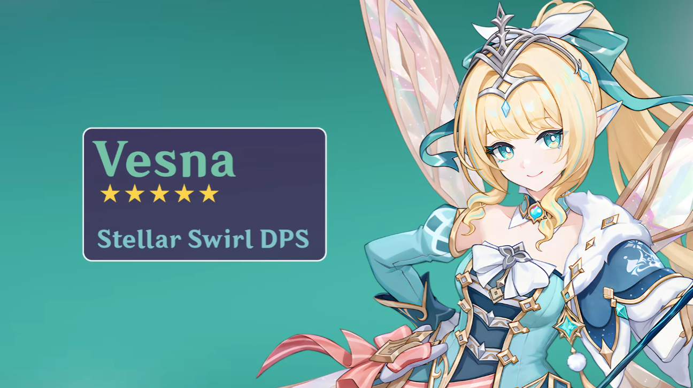
Vesna viene presentata come Main DPS Anemo.
2. Stile di Gioco (Playstyle)
Confronto meccanico
Ci sono differenze sostanziali nel modo in cui i due personaggi vengono giocati e ottimizzati.
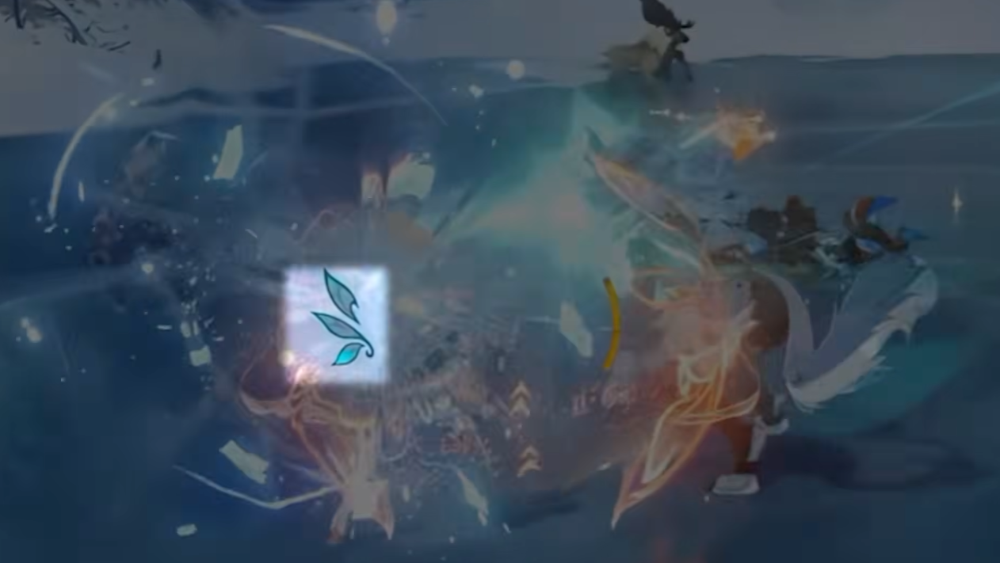
Gli attacchi normali e caricati alimentano il kit di Vesna.
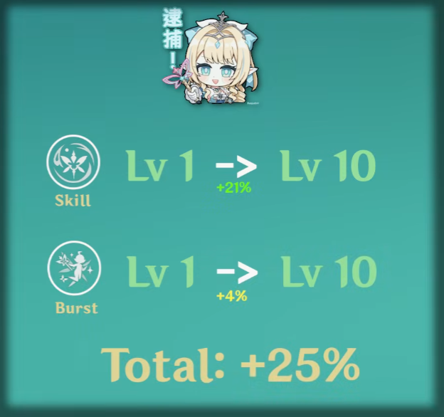
Lo scaling delle abilità attive rende i talenti importanti.
Vesna: payoff alto, esecuzione esigente
Usa attacchi normali/caricati per accumulare “punti” e scatenare le Abilità Elementali, la sua principale fonte di danni.
Deve colpire costantemente per generare punti.
Schivare è una forte perdita di DPS.
Necessita di scudi o resistenza all'interruzione, come ad esempioNicoleDionaVodyanitsa
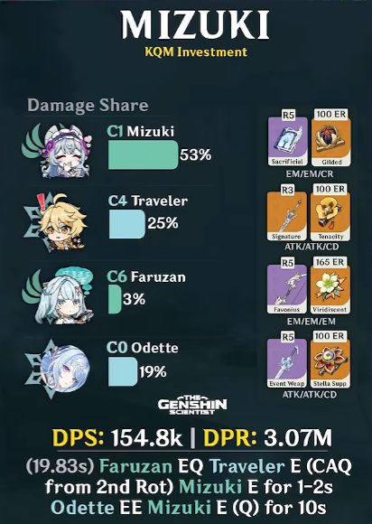
Il Sacrificial Fragment rende la rotazione più lunga grazie alle 2 skill aumentando così il danno.
Mizuki: kit permissivo e casual-friendly
I suoi danni e buff derivano in gran parte dalle passive. È facile da giocare anche con rotazioni complesse.
Bassa dipendenza dal livello dei talenti.
Può sfruttare ottimizzazioni semplici.
È più pratica per la maggior parte dei giocatori.
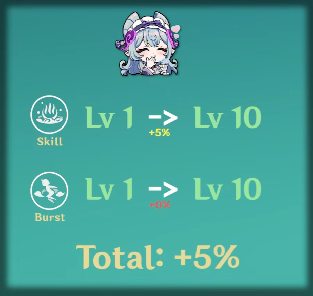
Le passive fanno la maggior parte del lavoro di Mizuki.
3. Confronto dei Danni e Costo dei Team (Investment Levels)
L'analisi del theorycrafting
Basso Investimento (Low Cost)
Mizuki ha un netto vantaggio. Un team con Mizuki e un solo personaggio 5-stelle limitato, o Mizuki C1/C2 (ottenibili gratis), raggiunge livelli di DPS eccezionali per il suo costo.
Vesna, a questi livelli di investimento, non giustifica la spesa di un personaggio limitato rispetto a una Mizuki gratuita.
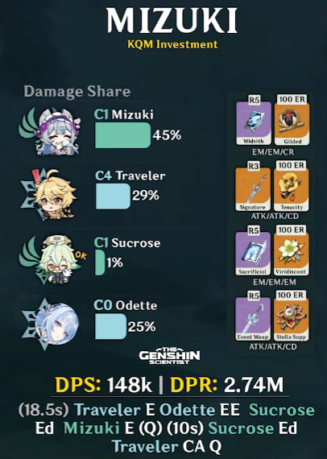
Danni a basso investimento (Relative Damage).
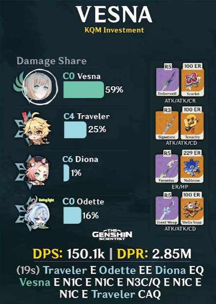
Il costo di Vesna non è giustificato rispetto a Mizuki gratuita.
Alto Investimento e Team Offensivi (High Cost / Sustainless)
Setup senza sustain
Se Vesna rinuncia a un personaggio di sustain (healer/shielder) per un setup puramente offensivo (es. con Faruzan), diventa altamente competitiva, ma è un gameplay “hardcore” adatto a pochi giocatori disposti a riprovare i livelli molte volte.
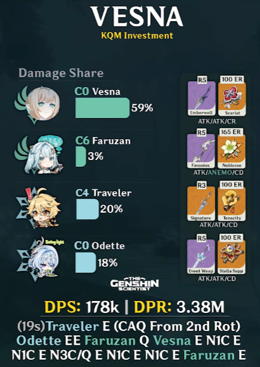
Setup offensivo senza sustain.
Odette C2 e setup premium
Con Odette C2 nel team, Vesna guadagna la riduzione della resistenza nemica in modo più consistente. In questi setup “premium” e senza sustain, Vesna supera Mizuki nei danni netti.
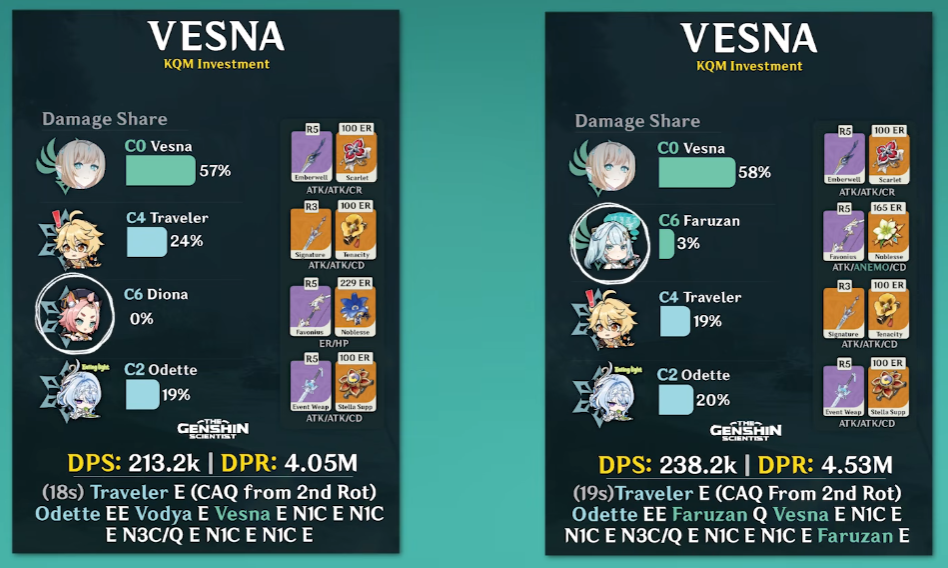
Odette C2 aumenta la consistenza del setup premium.
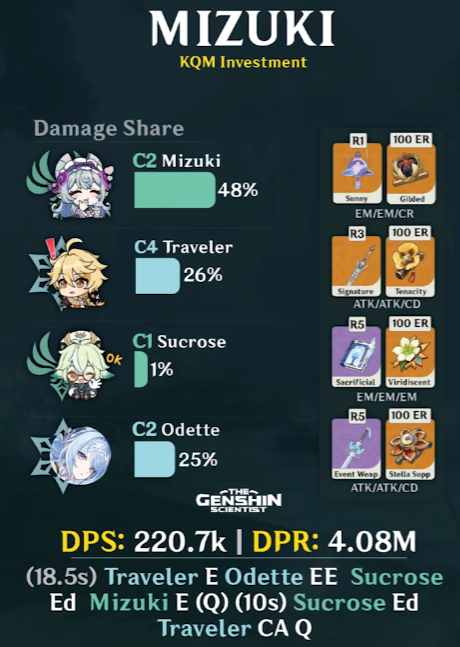
Setup ad alto investimento, quattro limited pulls.
Scaling con Talenti e Manufatti
A parità di artefatti eccellenti e talenti massimizzati (lvl 9+), Vesna trae molti più benefici rispetto a Mizuki perché contribuisce a una fetta molto più grande dei danni totali del suo team.
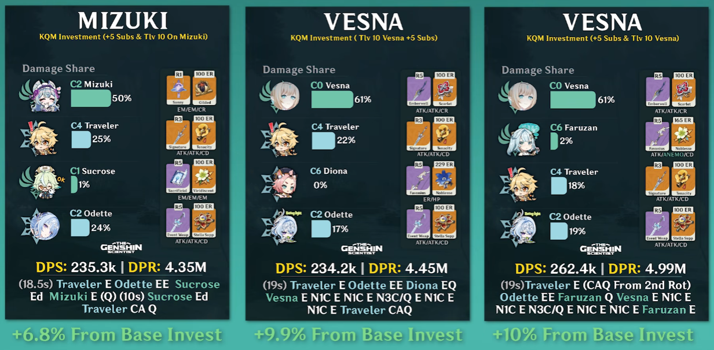
Il vantaggio cresce con artefatti eccellenti e talenti massimizzati.
4. L'Endgame: Dire Stygian Onslaught
Hardcore boss check
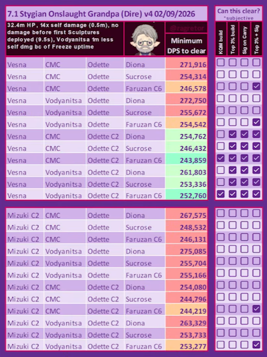
Un team Vesna ben investito offre più consistenza nel boss check.
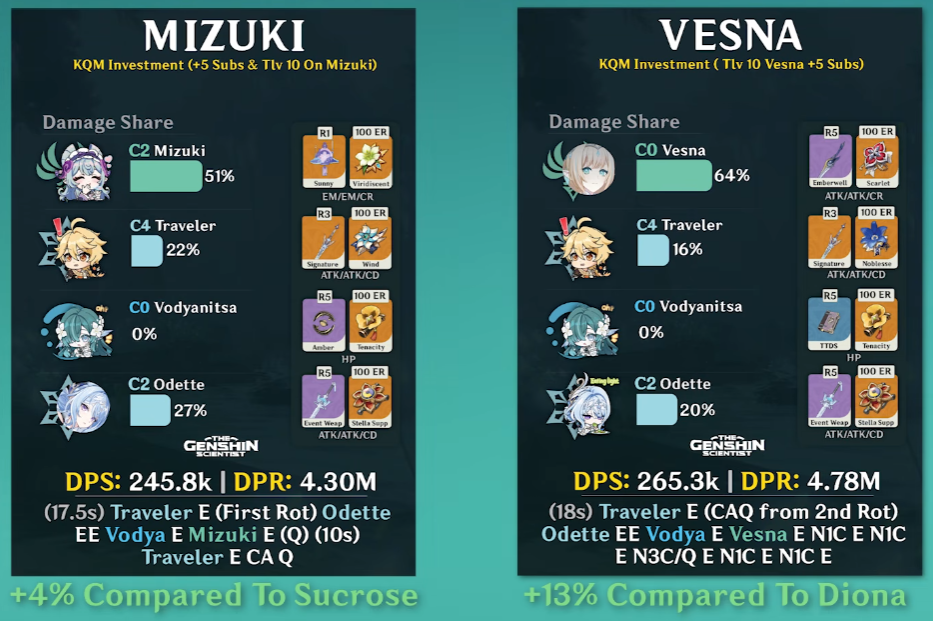
Supporti futuri, armi peculiari e C1 amplificano il vantaggio.
I calcoli stimano che per superare i boss della modalità hardcore Dire Stygian Onslaught, un team Vesna ben investito offre molte più probabilità e consistenza rispetto a un team Mizuki.
Vesna sinergizza molto meglio con futuri supporti come Vodana, le sue armi peculiari e la C1.
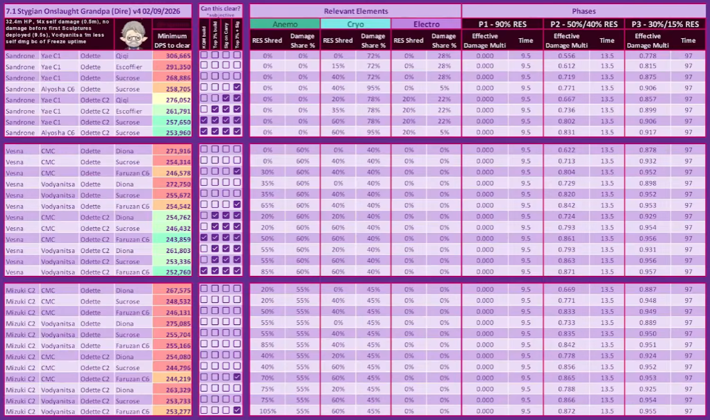
DPS Check per Dire Stygian Onslaught Boss.
5. Conclusione: Dovresti Pullare Vesna?
Verdetto finale
La risposta dipende dal contenuto che vuoi affrontare e dal livello di investimento che sei disposto a sostenere.
Salta Vesna se: Ti interessa completare il 99% dei contenuti del gioco in tranquillità. Mizuki è più che sufficiente e molto più facile da usare.
Pulla Vesna se: Vuoi dedicarti all'endgame hardcore (Dire Stygian Onslaught), sei disposto a investire molte risorse per massimizzare talenti/artefatti, e preferisci l'ottimizzazione pura per superare le sfide più difficili.
 Nicole
Nicole
 Diona
Diona
 Vodyanitsa
Vodyanitsa